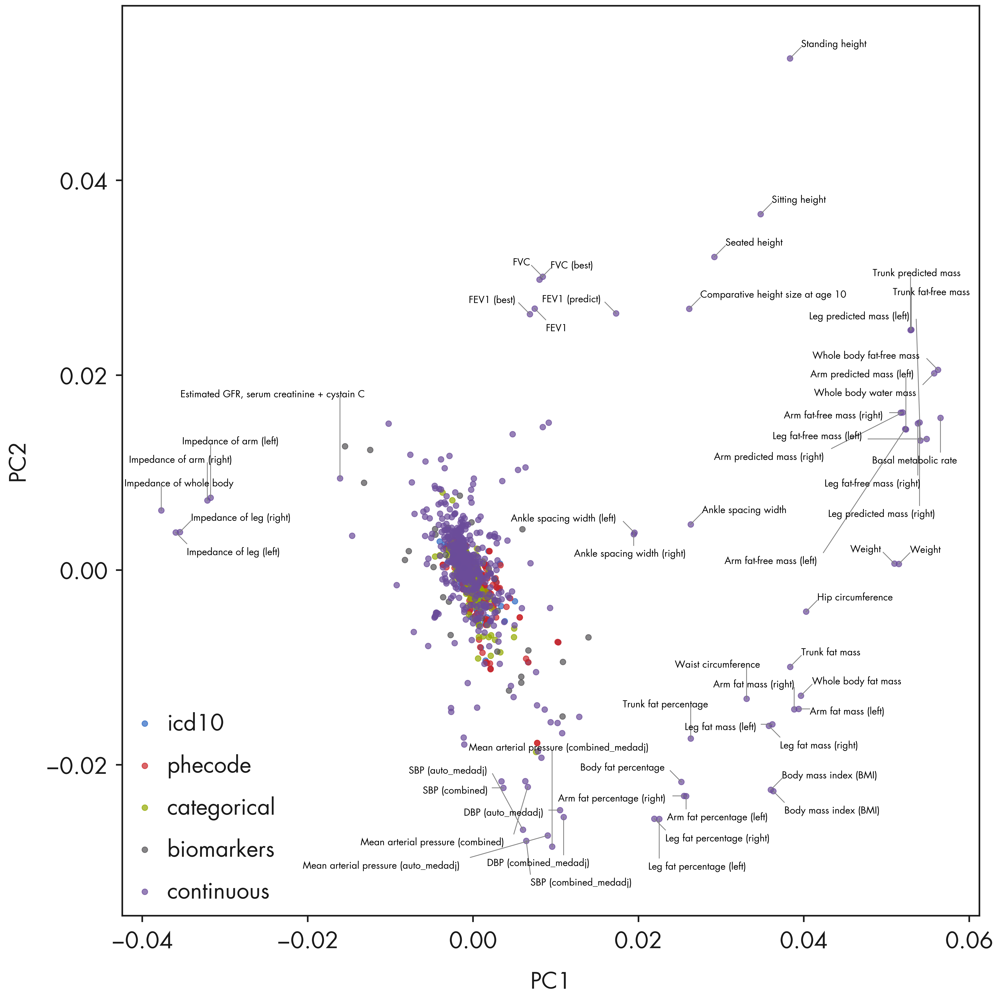

Code
import os
import re
import numpy as np
import pandas as pd
import pickle
from adjustText import adjust_text
import textallocSaikat Banerjee
October 8, 2024
import matplotlib.pyplot as plt
from pymir import mpl_stylesheet
from pymir import mpl_utils
from matplotlib.gridspec import GridSpec
import matplotlib.font_manager as mpl_fm
font_path = '/gpfs/commons/home/sbanerjee/nygc/Futura'
mpl_fm.fontManager.addfont(font_path + '/FuturaStd-Book.otf') # Loads "Futura Std"
mpl_stylesheet.banskt_presentation(splinecolor = 'black', dpi = 300)
# futura_book = FontProperties(fname='/gpfs/commons/home/sbanerjee/nygc/Futura/FuturaStd-Book.otf')
# NYGC Color Palette
nygc_colors = {
'brown': '#7F0814',
'darkred': '#d42e12',
'orange': '#F37239',
'darkyellow': '#F79320',
'yellow': '#FFE438',
'darkblue': '#003059',
'blue': '#266DB6',
'lightblue': '#A3D5ED',
'darkgreen': '#006838',
'green': '#0A8A42',
'lightgreen': '#74B74A',
'yellowgreen': '#BAD75F',
'darkgray': '#1A1A1A',
'gray': '#666666',
'lightgray': '#CCCCCC',
'khaki': '#ADA194',
'darkkhaki': '#5E514D',
}
# Style sheet for NYGC poster
mpl_stylesheet.banskt_presentation(dpi = 300, fontsize = 28,
splinecolor = nygc_colors['darkgray'], black = nygc_colors['darkgray'])
plt.rcParams['font.family'] = 'Futura Std'data_dir = "/gpfs/commons/home/sbanerjee/work/npd/PanUKB/data"
result_dir = "/gpfs/commons/home/sbanerjee/npddata/panukb/results/colormann-svd"
zscore_df = pd.read_pickle(os.path.join(data_dir, f"modselect/zscore_noRx.pkl"))
trait_df = pd.read_pickle(os.path.join(data_dir, f"modselect/traits_all_with_desc.pkl"))
variant_filename = f"{data_dir}/allvar.pruned.closesttss.hugo"
variant_df = pd.read_csv(variant_filename, sep = '\t')
nsample_filename = "/gpfs/commons/home/sbanerjee/work/npd/PanUKB/data/phe2483.SampleN.tsv"
nsample_df = pd.read_csv(nsample_filename, sep = '\t')methods = ["nnm", "nnm-sparse", "rpca"]
method_names = {
"nnm" : "NNM",
"nnm-sparse" : "NNM-Sparse",
"rpca" : "Robust PCA"
}
res_pklfile = {
"nnm": "nnm_model_r155872_iter1000.pkl",
"nnm-sparse": "nnm_sparse_model_r155872_iter1000.pkl",
"rpca": "rpca_model.pkl"
}
pca_comps = dict()
mf_comps = dict()
k = 200
for method in methods:
comps_filename = os.path.join(result_dir, method, "noRx", "pca_comps.pkl")
with open(comps_filename, "rb") as mfile:
pca_comps[method] = pickle.load(mfile)
mf_comps_filename = os.path.join(result_dir, method, "noRx", f"mf_comps_k{k}.pkl")
with open(mf_comps_filename, "rb") as mfile:
mf_comps[method] = pickle.load(mfile)
X = np.array(zscore_df.values.T)
X_cent = X - np.mean(X, axis = 0, keepdims = True)<class 'pandas.core.frame.DataFrame'>
Index: 2110 entries, 0 to 2482
Data columns (total 20 columns):
# Column Non-Null Count Dtype
--- ------ -------------- -----
0 zindex 2110 non-null int64
1 trait_type 2110 non-null object
2 phenocode 2110 non-null object
3 pheno_sex 2110 non-null object
4 coding 267 non-null object
5 modifier 394 non-null object
6 description 2110 non-null object
7 description_more 1408 non-null object
8 coding_description 261 non-null object
9 category 2072 non-null object
10 BIN_QT 2110 non-null object
11 n_cases_EUR 2110 non-null int64
12 n_controls_EUR 1304 non-null float64
13 N 2110 non-null int64
14 Neff 2110 non-null float64
15 filename 2110 non-null object
16 aws_link 2110 non-null object
17 estimates.final.h2_observed 2106 non-null float64
18 long_description 2110 non-null object
19 short_description 2110 non-null object
dtypes: float64(3), int64(3), object(14)
memory usage: 346.2+ KBimport scipy.stats as sc_stats
import collections
def q1(x, axis = None):
return np.percentile(x, 25, axis = axis)
def q3(x, axis = None):
return np.percentile(x, 75, axis = axis)
def iqr_outlier(x, axis = None, bar = 1.5, side = 'both'):
assert side in ['gt', 'lt', 'both'], 'Side should be `gt`, `lt` or `both`.'
d_iqr = sc_stats.iqr(x, axis = axis)
d_q1 = q1(x, axis = axis)
d_q3 = q3(x, axis = axis)
iqr_distance = np.multiply(d_iqr, bar)
stat_shape = list(x.shape)
if isinstance(axis, collections.abc.Iterable):
for single_axis in axis:
stat_shape[single_axis] = 1
else:
stat_shape[axis] = 1
if side in ['gt', 'both']:
upper_range = d_q3 + iqr_distance
upper_outlier = np.greater(x - upper_range.reshape(stat_shape), 0)
if side in ['lt', 'both']:
lower_range = d_q1 - iqr_distance
lower_outlier = np.less(x - lower_range.reshape(stat_shape), 0)
if side == 'gt':
return upper_outlier
if side == 'lt':
return lower_outlier
if side == 'both':
return np.logical_or(upper_outlier, lower_outlier)fig = plt.figure(figsize = (18, 18))
ax1 = fig.add_subplot(111)
method = 'nnm_sparse'
ipc1 = 0
ipc2 = 1
trait_indices = np.array(trait_df_noRx.index)
trait_types = trait_df_noRx['trait_type'].unique().tolist()
trait_colors = {trait: color for trait, color
in zip(trait_types, mpl_stylesheet.banskt_colors()[:len(trait_types)])}
pcomps = mf_comps["rpca"][0]
for t in trait_types:
selectidx = np.array(trait_df_noRx[trait_df_noRx['trait_type'] == t].index)
tidx = np.searchsorted(trait_indices, selectidx)
xvals = pcomps[tidx, ipc1]
yvals = pcomps[tidx, ipc2]
ax1.scatter(xvals, yvals, alpha = 0.7, color = trait_colors[t], label = t, s = 50)
ax1.legend(loc = 'lower left')
# Combine outliers in x-axis and y-axis
xvals = pcomps[:, ipc1]
yvals = pcomps[:, ipc2]
outlier_idx_x = np.where(iqr_outlier(xvals, axis = 0, bar = 10.0))[0]
outlier_idx_y = np.where(iqr_outlier(yvals, axis = 0, bar = 10.0))[0]
outlier_idx = np.union1d(outlier_idx_x, outlier_idx_y)
x_center = np.mean(ax1.get_xlim())
# # Mark using adjustText package
# # https://github.com/Phlya/adjustText
# annots = []
# for i in outlier_idx:
# txt = trait_df.loc[trait_indices[i]]['description'].strip()
# if 'intima-medial thickness' in txt:
# continue
# if xvals[i] > x_center:
# annots += [ax1.annotate(txt, (xvals[i], yvals[i]), fontsize = 6, ha = 'right')]
# else:
# annots += [ax1.annotate(txt, (xvals[i], yvals[i]), fontsize = 6)]
# # Adjust the annotations iteratively
# adjust_text(annots, arrowprops=dict(arrowstyle='-', color = 'grey'))
# Mark using textalloc package
txt_list = []
text_idx_list = []
for i in outlier_idx:
txt = trait_df_noRx.loc[trait_indices[i]]['short_description'].strip()
#if 'intima-medial thickness' in txt:
# continue
txt_list.append(txt)
text_idx_list.append(i)
if len(text_idx_list) > 0:
txt_idx = np.array(text_idx_list)
textalloc.allocate_text(fig, ax1, xvals[txt_idx], yvals[txt_idx], txt_list,
x_scatter = xvals, y_scatter = yvals,
textsize = 12, textcolor = 'black', linecolor = 'grey')
ax1.set_xlabel(f"PC{ipc1 + 1}")
ax1.set_ylabel(f"PC{ipc2 + 1}")
plt.tight_layout()
plt.show()